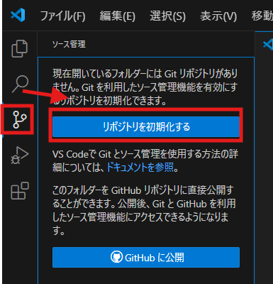
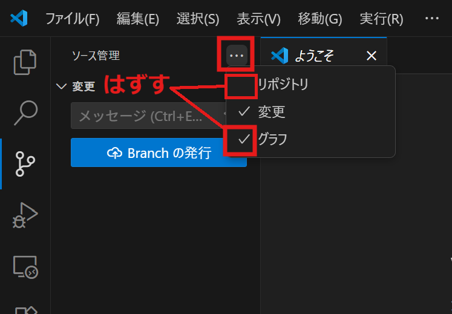
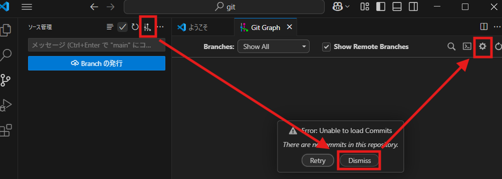
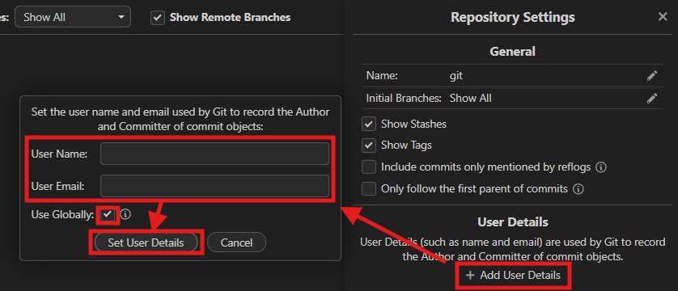
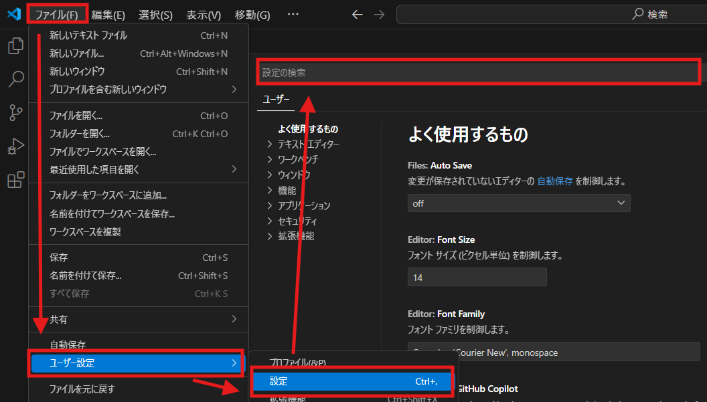
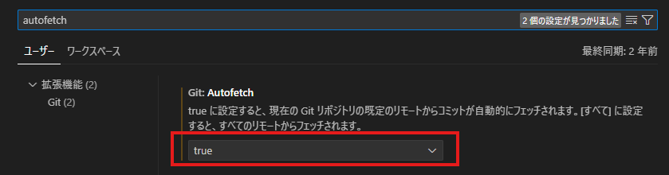
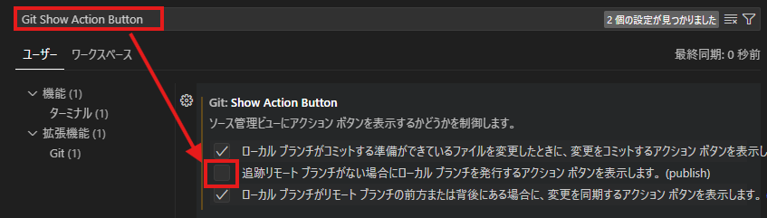
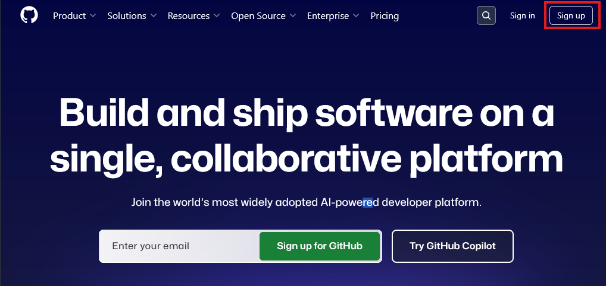
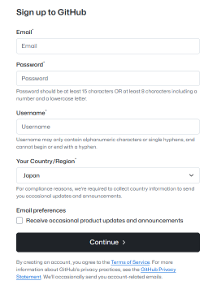

winget install Git.Git環境構築
このページではgitを使うための環境を準備していきます。Gitアプリ、VSCode、そしてVSCodeを使いやすくするために、いくつかの拡張機能の導入や設定変更を行います。
Gitアプリとgitクライアントの用意
gitを操作するためには、Gitアプリが必要となります。公式Webサイトからインストーラーをダウンロードしてきてもよいですが、以下のようなwinget（Windows）あるいはbrew（macOS）を使ったインストールが簡単です。
- スタートメニューでPower Shellと検索し、出てきたアプリを実行
- 開いた画面で以下のコマンドを入力し、最後にエンターキーを押す
- homebrewが未導入なら、まずリンク先からインストール
- ターミナルで以下のコマンドを入力し、最後にエンターキーを押す
brew install git
WebサイトからインストールでもOK
上手くいかなければ、以下のWebサイトからもインストール可能です。
https://git-scm.com
次に、gitを視覚的に使えるようにするgitクライアントです。この解説では、Visual Studio Code (以下VSCode)を使用します。VSCodeは、エディタ（ソースコードを書くためのソフト）として極めて優秀ですが、ここでは、gitの管理用に用意します。
別記事（VSCodeの使い方）としてまとめてありますので、この記事を参考にインストールしてください。
VSCodeへの拡張機能の導入
次に、VSCodeでGitを使うための設定を行います。
VSCodeは、拡張機能と呼ばれるアドインを入れることで、より使いやすくなります。Gitを使いやすくするために、二つの拡張機能を入れます。
一つ目、Git Graphは、Gitの変更履歴全体をより視覚的に分かりやすくしてくれます。
二つ目、Git Historyは、個別のファイルの変更履歴をより分かりやすくしてくれます。
いずれも以下の手順でインストールできます。
- アクティビティバーから拡張機能ボタン（4つの四角マーク）を選ぶ。
- 検索窓でGit Graph（またはGit History）を検索し、出てきた一番上の機能を拡張機能をインストールを押す。
- 表示されていた「インストール」の表示が消えれば完了。

Gitの初期設定
次に、Gitの初期設定を行います。
- VSCodeで適当なフォルダを開く
- アクティビティバーから丸三つが線でつながれた「ソース管理」のボタンを押し、「ソース管理」画面を開く
- 最初は「リポジトリを初期化する」と出てくるので、クリック（「Branchの発行」など違う表示が出てきた場合はこの手順は飛ばす）

- ソース管理画面の右上にある「・・・」をクリックし、「変更」以外のチェックを外す（「表示」「表示と並べ替え」など違う表示が出てきた場合はこの手順は飛ばす）

- ソース管理画面の右上に、縦線がいくつか並んでいる「View GitGraph」ボタンがあるのでこれを押して、「GitGraph」画面を開く。
- おそらくこの時点では「コミットがない Unable to load commits」というエラーが出てくるが、無視して「Dismiss」を押してよい。

- GitGraph画面の右上、歯車マークを押して、設定画面 Repository Settings を開く。
- 中ほどにあるUser Details の部分を確認する。User Nameなどが表示されていれば、これ以降の処理はスキップしてよい。表示されていなければ、「Add User Details」を押す。
- ユーザー情報を入力する画面が開くので、ユーザーネーム、メールアドレスを入力し、「Use Globally」にチェックが入っていることを確認して「Set User Details」を押す。
- ユーザーネームはニックネームなどでも構いません。

ユーザー情報はターミナルからでも設定できる
gitの初期設定（氏名とアドレスの設定）はPower Shellやターミナルから設定することも可能です。以下のようなコマンドでユーザーネーム、メールアドレスを設定します。
git config --global user.name "適当なユーザーネーム"
git config --global user.email "mail_adress@mail.com"これで、Gitの初期設定は完了です。
なお、今回使用した「ソース管理」の画面は、gitについての操作がまとめられた画面で、今後頻繁に使用するので覚えておいてください。
なぜユーザー情報が必要？
履歴を管理するだけなのにユーザーネームやメールアドレスの登録が必要というのは奇妙な気がします。
実はこれは、gitが複数人以上での共同作業を前提に設計されているためです。共同作業においては、「誰がいつ何を変更したか」を明確にする必要があるため、区別のためにユーザー名やメールアドレスを入力することになっています。
なお、メールアドレスを入力しても特にメールが届いたりすることはありません。また、ローカルで利用している限りは、これらの情報は共同作業を行うメンバー以外が目にすることもありません。
ただし、サーバー上で自身のgit上の履歴を公開する場合、これらのユーザーネームやメールアドレスは誰でも閲覧できる状況になります。サーバーを利用するつもりであれば、この点を念頭に登録しましょう。
VSCodeのカスタマイズ
VSCodeでGitを使いやすくするため、少しVSCodeの設定を操作します。
- 上部メニューの「ファイル」→「ユーザー設定」→「設定」を選択し、設定画面を開く

- 設定画面上部にある検索窓に「autofetch」と入力すると、「Git: Autofetch」という項目が下部に出てくるので、trueを選択

- 同じく、設定画面上部にある検索窓に「Git Show Action Button 」と入力。3つのチェックボックスが並んでいる二つ目、「追跡リモートブランチがない場合に・・・(publish)」と書かれている項目のチェックは外しておく。

以上で、VSCodeの初期設定は完了です。特に保存ボタンはないので、このまま設定画面は消して構いません。
カスタマイズの意味
autofetchは、サーバーと通信して他者による変更履歴等があれば自動的にgitの情報を更新する機能です。通信が増える以外にデメリットはないので、通常はtrueにしておいたほうが便利です。
Git Action Buttonは、VSCodeのソース管理画面において、ボタン一つで様々な操作ができる便利な機能です。ただ、2つ目の項目はgitをローカルで使おうとする際には邪魔なだけの機能なので、混乱を避けるために外しておきます。
ホスティングサービスのアカウントの用意
Note
この項目は、オンラインサーバーとの同期機能を使わない限り、スキップして構いません。
最後に、オンラインサーバーを提供しているホスティングサービスにアカウントを作成しましょう。ここでは、GitHubのアカウントの作り方を例に挙げます。
GitHub公式サイトを開き、右上の「Sign up」を押します。

開いた画面でメールアドレス、パスワード、ユーザーネームを選びます。ユーザーネームは英数字とハイフンのみが使用できます。

Continueを押した後は、指示に従いましょう。画像認証後、メールアドレスに届くコードを入力するように求められるはずです。
最後に、登録したユーザーネームとパスワードでログインできれば完了です。